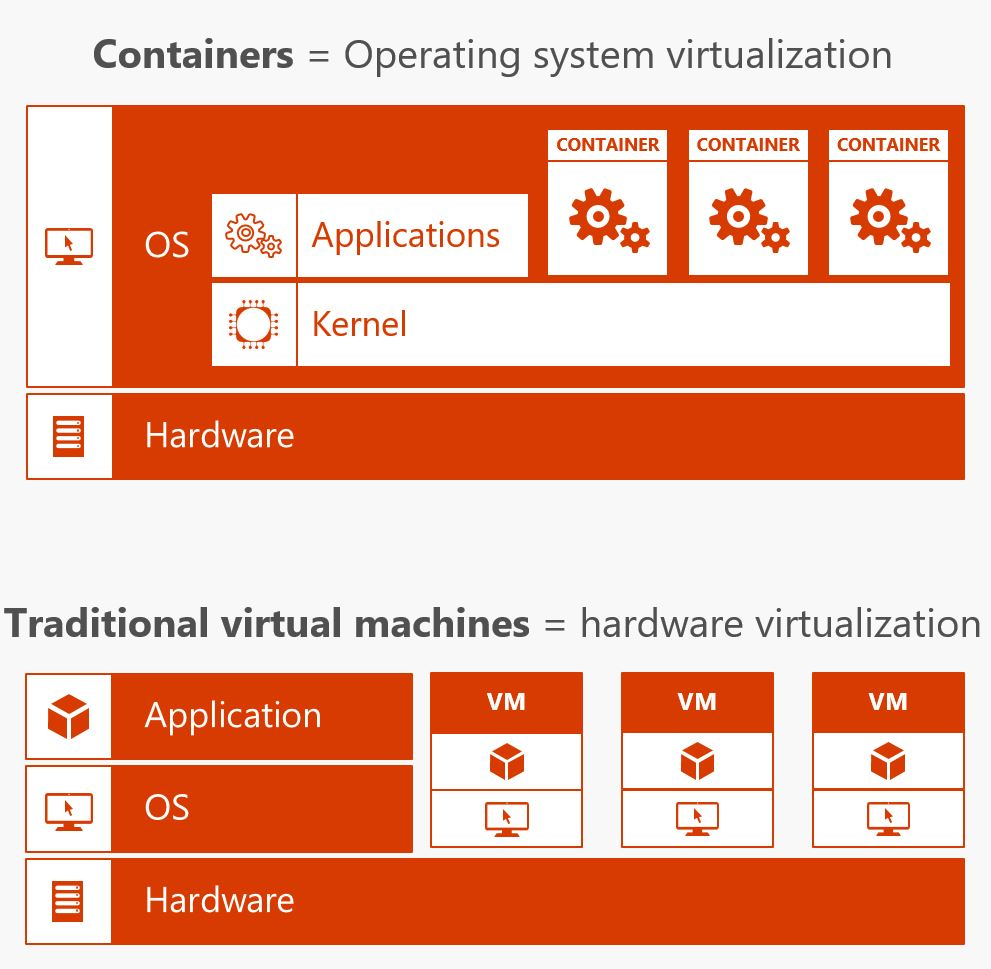
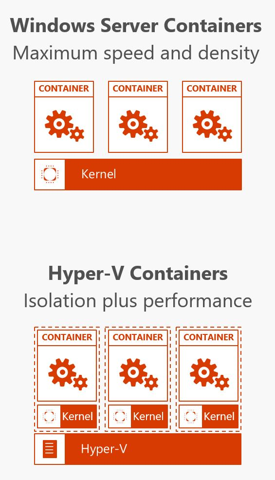

Deployment
Author: Kevin Remde (@KevinRemde)
Github
From Wikipedia:
GitHub is a web-based Git or version control repository and Internet hosting service. It is mostly used for code. It offers all of the distributed version control and source code management (SCM) functionality of Git as well as adding its own features. It provides access control and several collaboration features such as bug tracking, feature requests, task management, and wikis for every project.
GitHub offers both plans for private and free repositories on the same account[4] which are commonly used to host open-source software projects.[5] As of April 2017, GitHub reports having almost 20 million users and 57 million repositories,[6] making it the largest host of source code in the world.
GitHub has a mascot called Octocat :octocat:, a cat with five tentacles and a human-like face."
Github Webhooks
Webhooks allow you to build or set up GitHub Apps which subscribe to certain events on GitHub.com. When one of those events is triggered, we'll send a HTTP POST payload to the webhook's configured URL. Webhooks can be used to update an external issue tracker, trigger CI builds, update a backup mirror, or even deploy to your production server. You're only limited by your imagination.
Each webhook can be installed on an organization or a specific repository. Once installed, they will be triggered each time one or more subscribed events occurs on that organization or repository.
You can create up to 20 webhooks for each event on each installation target (specific organization or specific repository).
Github Deploy Keys
A deploy key is an SSH key that is stored on your server and grants access to a single GitHub repository. They are often used to clone repositories during deploys or continuous integration runs. Deploys sometimes involve merging branches and pushing code, so deploy keys have always allowed both read and write access.
Build Pipeline
Simply stated, a build pipeline is the definition and automation of the steps required to build and/or deploy code revisions.
This typically takes a form something like this:
- A developer locally modifies and tests code, and when ready, checks it into a branch (call it "Dev") in a github repo.
- A build pipeline tool detects the change, and executes some automation to compile or build and/or containerize the app. It may also deploy it into a test environment.
- Additional automation may launch as a result of a pull request being approved (example merge of Dev into the master branch), whereby the app is ultimately deployed into something closer to production, such as a User-acceptance testing (UAT) environment.
Popular solutions
Some well-known build pipline solutions:
Docker Containers
Containers are virtualization at a whole 'nuther level. The easiest way to understand it is to compare it to machine virtualiztion. A VM is actually sharing hardware. A container is acutally sharing an operating system. 
Docker Images and Docker Containers

Simple demo
Layered Filesystem
Onions have layers...
Ogres have layers...
And Containers have layers.

Images have layers, but containers have one more than the image it's based on.
Composition
The DockerFile
Docker can build images automatically by reading the instructions from a Dockerfile, a text file that contains all the commands, in order, needed to build a given image. Dockerfiles adhere to a specific format and use a specific set of instructions.
Demo time
Docker Compose
Compose is a tool for defining and running multi-container Docker applications. With Compose, you use a Compose file to configure your application’s services. Then, using a single command, you create and start all the services from your configuration.
Using Compose is basically a three-step process:
Define your app’s environment with a Dockerfile so it can be reproduced anywhere.
Define the services that make up your app in docker-compose.yml so they can be run together in an isolated environment.
Lastly, run docker-compose up and Compose will start and run your entire app.
For more, here is an overview of Docker Compose.
Orchestration
Container Orchestration
Container Orchestration allows users to define how to coordinate the containers in the cloud when the multi-container packaged application is deployed.
Swarm and Kubernetes and DC/OS
Here are 8 Container Orchestration Tools to Know
Technical Challenge
Before you do the challenge, you will need make sure you have the following items installed locally:
- BASH on Windows (Ubuntu version)
- Azure CLI 2.0 (in BASH)
- .NET Core 2.0 (in BASH) - Not strictly required, unless you want to try containerizing a .NET Core app for extra credit.
- Hyper-V
- Docker for Windows (which requires Hyper-V. I recommend the "Edge" version. You'll be running it in "Linux container mode")
- For extra-credit, you'll need the Kubernetes command-line tool, "kubectl" installed.
And now, your mission...
You'll find the challenge here: Kevin's Depl_Challenge on Github